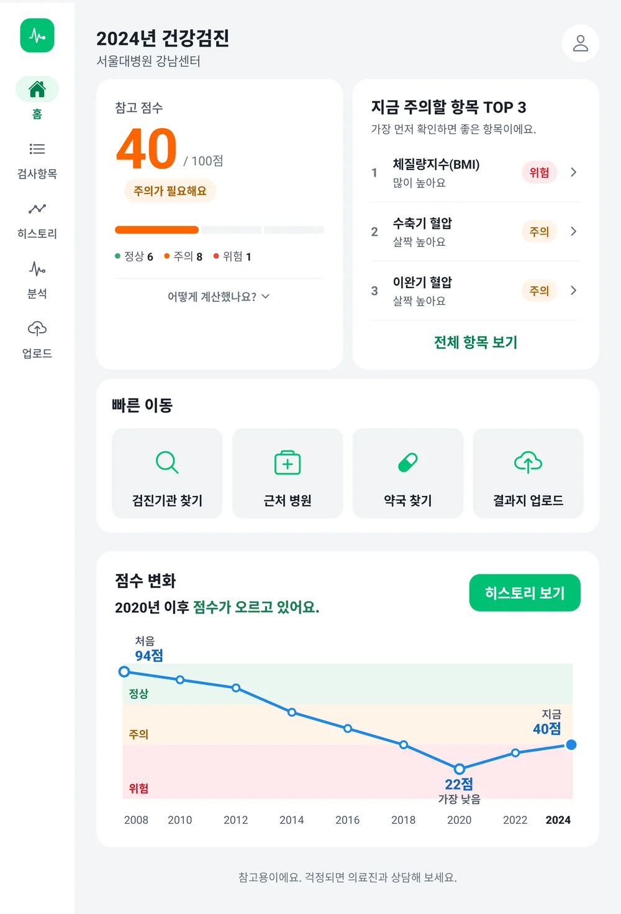
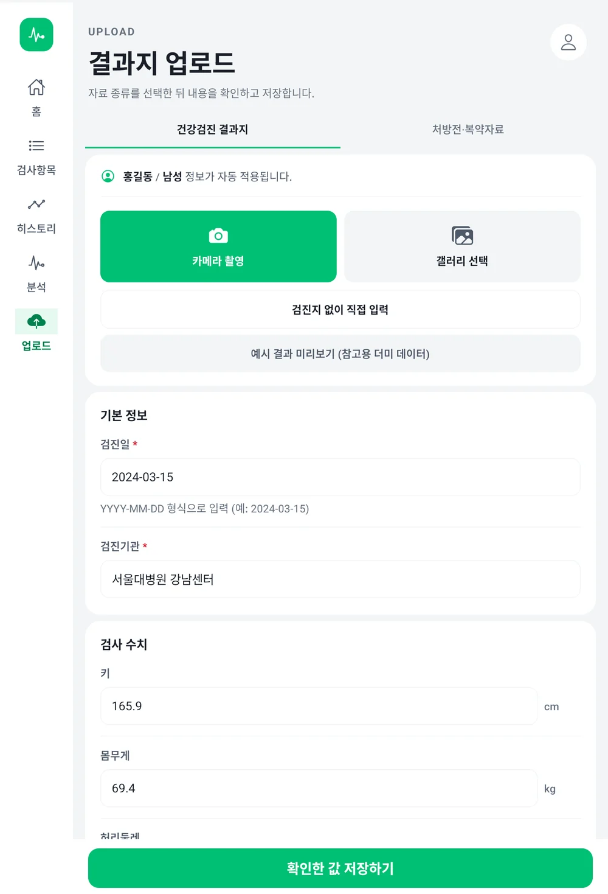
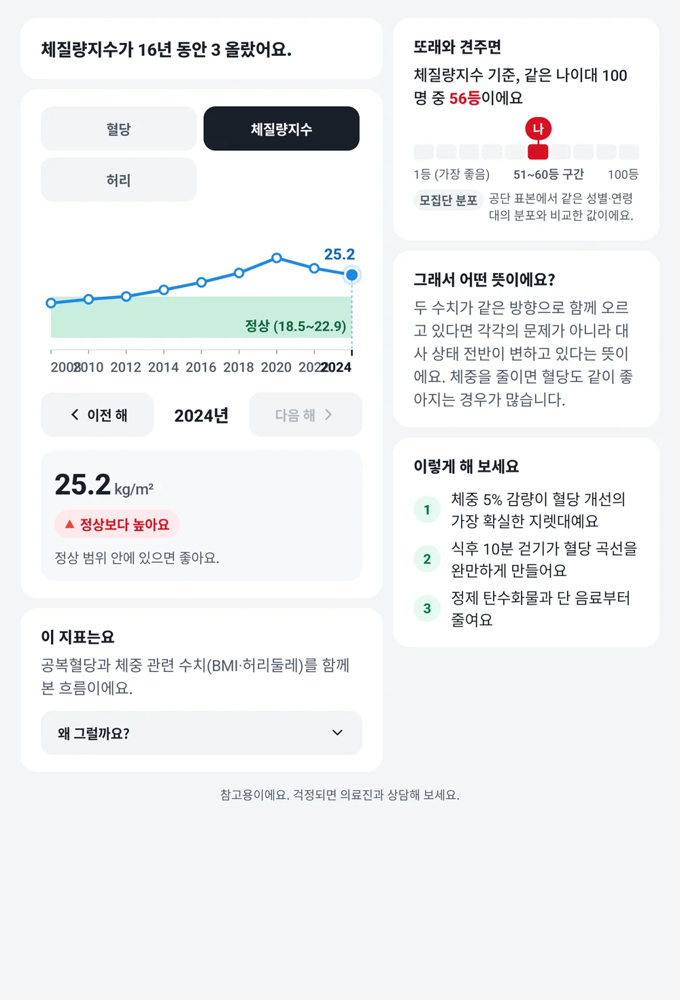
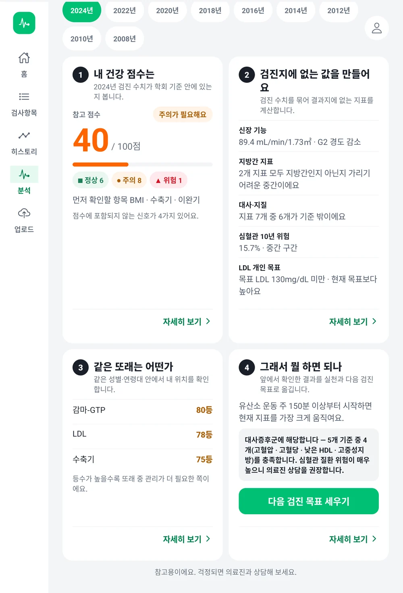
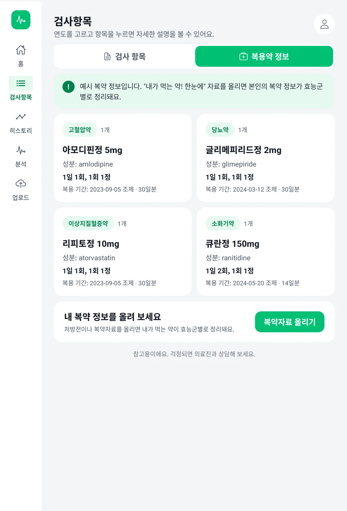
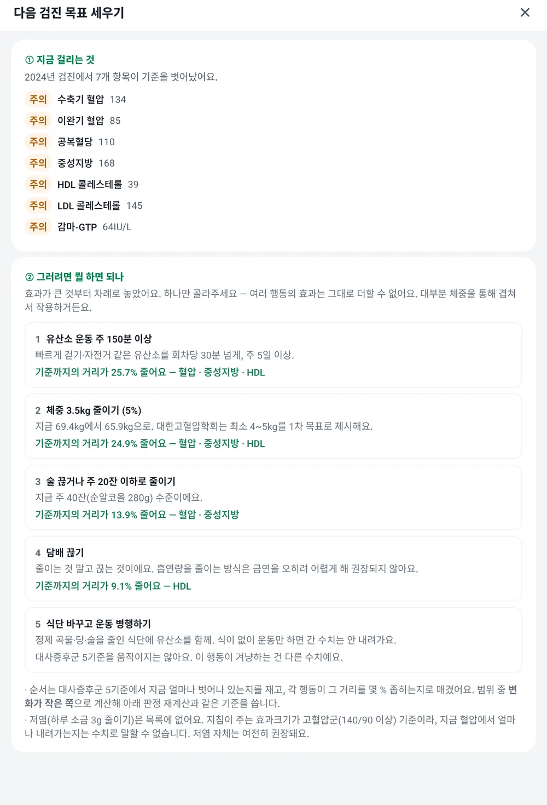

사물인터넷 혁신융합대학사업단
HealthAge
헬스에이지
사진 한 장으로 읽는
건강검진 아카이브
제주대학교 컴퓨터공학전공 코드짜는 한라봉
강승준 · 고강혁 · 양인권

문제
건강검진 결과지는 어디로 갈까요?
출처: 일반인 설문(2026), 검진 경험자 64명
문제
건강검진 결과지가 어려운 이유
결과지를 읽지 않거나 이해하기 어려웠던 이유 (62명, 복수 응답)
출처: 일반인 설문(2026), 응답자 62명, 한 사람이 여러 개 고름
문제
결과지가 알려 주지 않는 세 가지
작년과 비교
올해 값만 적혀 있습니다.
또래 속 내 위치
같은 연령대·성별 속 위치가 없습니다.
계산해야 나오는 지표
수치를 묶어야 보이는 값은 없습니다.
헬스에이지는 이 세 가지를 자동으로 더합니다
해결
사진 한 장이면 됩니다
촬영
결과지를 사진으로 찍습니다
확인
읽은 값을 보고 틀린 곳을 고칩니다
분석
또래 비교, 연도별 변화, 숨은 지표를 봅니다
행동
다음 검진까지 챙길 일을 알려 줍니다
STEP 1 · 2 촬영과 확인
찍고, 확인하고,
저장합니다
비전 AI가 읽어 18칸을 자동으로 채웁니다
- 읽은 값은 직접 확인하고 고친 뒤 저장합니다.
- 심평원 「내가 먹는 약! 한눈에」 복약 기록도 불러옵니다.

STEP 3 분석 · 또래 비교
같은 연령대·성별과
비교합니다
사람 하나가 10명 · 예: 체질량지수는 또래 100명 중 56등 (데모 계정)

STEP 3 분석 · 연도별 변화
해마다 어떻게 바뀌었는지
보여 줍니다
병원을 옮겨도 기록이 한 줄로 이어지고, 정상·주의·위험 구간이 바뀐 해를 짚어 줍니다.

STEP 3 분석 · 숨은 지표
결과지에 없는
지표 22종
검진 수치를 묶어 계산하는 지표 22종을 자동으로 구합니다.

STEP 3 분석 · 복약 반영
복약 중인 약까지
분석에 반영합니다
대사증후군 기준은 혈압약을 먹는 사람을 혈압 항목에 해당한다고 봅니다.

STEP 4 행동
다음 검진까지 무엇부터
할지 알려 줍니다
대사증후군 기준에서 벗어난 정도가 줄어드는 비율입니다. 의학적 우선순위는 아닙니다. (데모 계정 예시)

근거
검증된 근거로 판정합니다
학회 진료지침 7종
약학대학 교수 자문
기업 멘토링 3회 · ㈜제우스
실제 결과통보서로 판독 시험
예측 모델이 아니라 공단 통계와 진료지침으로 판정합니다참고용이며 의학적 진단을 대신하지 않습니다.
체험
옆 태블릿에서 직접 해 보세요
샘플 검진지
준비된 예시 결과지를 씁니다
촬영
태블릿으로 찍습니다
확인
읽은 값을 확인합니다
결과
분석 결과를 봅니다
관람객 본인의 결과지는 받지 않습니다